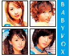
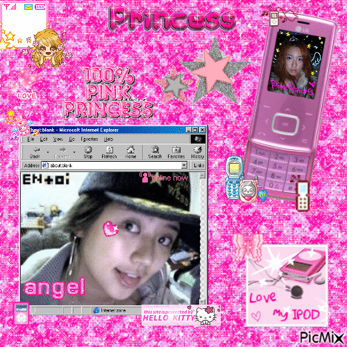

Baby V.O.X Gallery
*** PHOTO ARCHIVE OVERFLOW * PRESS PHOTOS, LIVE SHOW SCREENCAPS, AND MAGAZINE SCANS UPDATED DAILY! ***
Select a media folder to view individual photo archives!

[ Group Clip ]
[ Kim EZ ]
[ Lee Heejin ]
[ Shim Eun Jin ]

[ Eun Hye ]
[ Mi Youn ]
← Back to Home